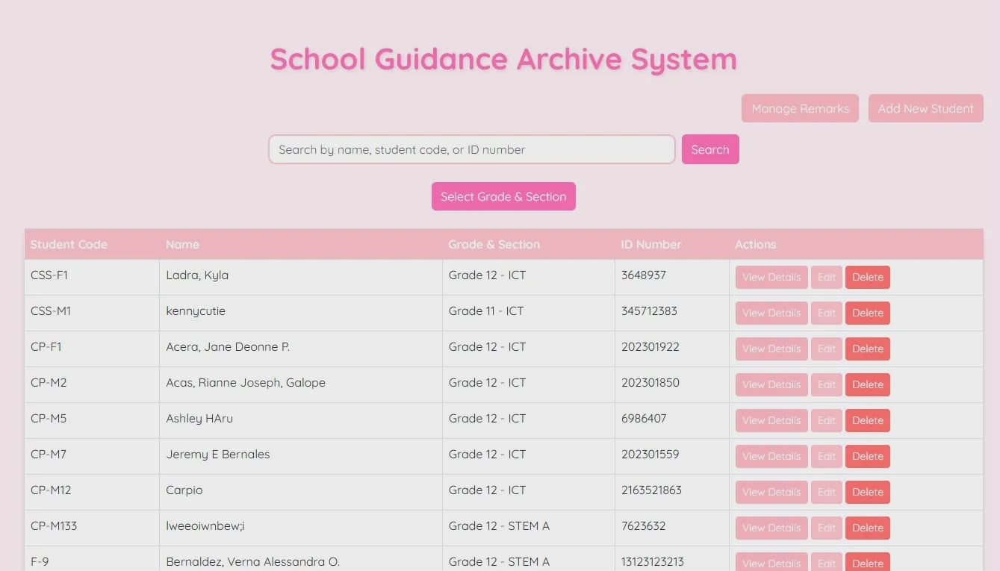
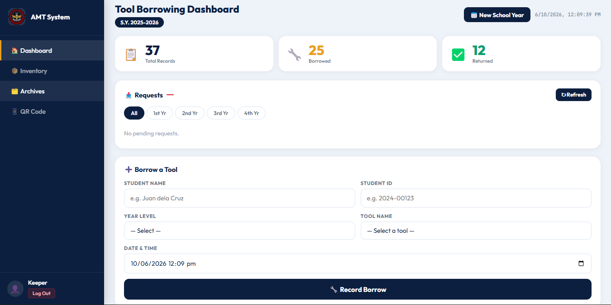

Portfolio Landing Page
2025A digital system that securely stores and organizes student guidance records . It helps guidance personnel retrieve and update information quickly while maintaining confidentiality.
Student | Aspiring Web Developer
I am a Computer Science student at University of Bohol, passionate about learning web development and creating clean, simple, and aesthetic designs using HTML and CSS.
18 years old from Mawi, Duero, Bohok — a dedicated student who enjoys exploring new technologies, practicing web development, and improving design skills.
I’ve been interested in web development since I was a kid. That interest grew as technology evolved. I enjoy learning how websites are created and how different tools and languages come together to build designs that are both functional and visually pleasing.
As web development continues to advance, I’m excited to learn more. I enjoy turning simple ideas into interactive websites and experimenting with layouts, responsiveness, and small details that enhance user experience.

A digital system that securely stores and organizes student guidance records . It helps guidance personnel retrieve and update information quickly while maintaining confidentiality.

A web-based system that simplifies the borrowing and return of tools by tracking requests, availability, and user records. It improves inventory management and ensures accountability for borrowed equipment.
Let’s connect. You can edit these links anytime.